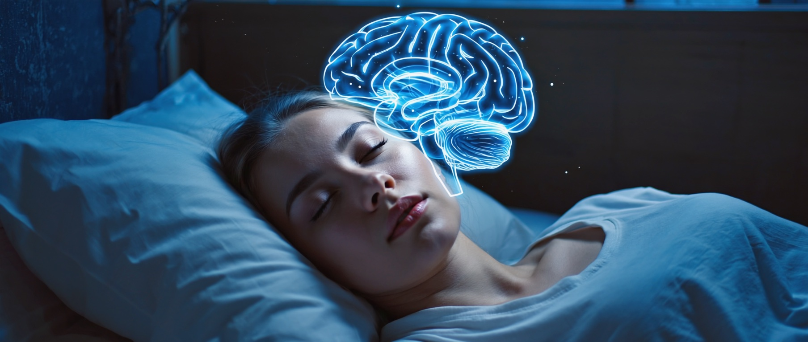

Сон это вторая смена мозга: ночью он вымывает мусор, укладывает память и разбирает эмоции. Разбираем, зачем нужен глубокий сон и как вернуть его себе.
Треть жизни человек проводит с закрытыми глазами, и долго казалось, что это пустое, отключённое время, из которого хорошо бы урвать пару часов на дела. Оказалось наоборот. Пока тело лежит неподвижно, мозг выходит на вторую смену: промывает сам себя, разбирает впечатления дня, перекладывает выученное на долгое хранение и вынимает жало из вчерашних эмоций. Мэттью Уокер, нейробиолог из Беркли и автор книги «Зачем мы спим», говорит об этом прямо. Сон это единственное действие, которое чинит тело и психику разом. Ни одна таблетка, ни одна диета, ни один вид тренировки не закрывает столько задач за один заход.
И вот что стоит понять с самого начала. Всё это происходит потому, что у мозга есть работа, которую он физически не может сделать при свете дня. Днём он занят вами: восприятием, речью, решениями, реакцией на каждую мелочь. Ночная уборка ждёт своей очереди. Отнять у мозга эту очередь значит копить невыполненное, и накопленное потом видно и в памяти, и в настроении, и в анализах крови.
У любой активной ткани к вечеру скапливается мусор обмена веществ. У мозга та же история, но у него нет обычной лимфы, которая уносит отходы по всему телу. Долго было непонятно, кто же выносит мусор из головы. Ответ нашла Майкен Недергаард с командой: в 2013 году в журнале Science они описали глимфатическую систему, промывочные каналы, которые включаются в основном во сне.
Механизм красивый до дрожи. Когда человек уходит в глубокий сон, клетки мозга слегка ужимаются, и промежутки между ними расширяются больше чем наполовину. По этим расширенным щелям, как по руслам, прокачивается спинномозговая жидкость и вымывает белковый мусор, накопленный за день. Днём, при бодрствовании, этот поток идёт вяло, каналы почти закрыты. Уборка выходит на полную мощность только когда сознание отключается.
В глубоком сне межклеточное пространство мозга увеличивается больше чем на половину, и поток спинномозговой жидкости уносит отходы примерно вдвое быстрее, чем при бодрствовании. Днём эта промывка почти стоит.
Среди того, что вымывается ночью, есть бета-амилоид, тот самый белок, чьи скопления находят в мозге при болезни Альцгеймера. Отсюда осторожный, но настойчивый вывод исследователей: хронический недосып мешает мозгу выносить этот мусор, и он копится годами. Это направление, а не готовый приговор, никто не обещает, что лишний час сна отменяет деменцию. Но связь измерена в нескольких независимых работах, и она заставляет смотреть на бессонные ночи иначе, чем на обычную усталость.
Сон не ровная плита от отбоя до будильника. Он идёт циклами примерно по полтора часа, и внутри каждого мозг проходит несколько этажей: лёгкую дремоту, затем глубокий медленный сон, затем быстрый сон со сновидениями. За ночь таких циклов четыре-пять, и вот что важно: их наполнение меняется. В первой половине ночи больше глубокого медленного сна, того самого, что промывает мозг и переносит память. Ближе к утру циклы почти целиком отдают под быстрый сон, где разбираются эмоции.
Из этого следует неприятная арифметика. Если лечь как обычно, но встать на два часа раньше, человек лишается почти всего быстрого сна, ведь тот приходится на утренние часы. Формально недоспал двадцать пять процентов, а по сути потерял большую часть эмоциональной разгрузки. Точно так же поздний отбой съедает первые, самые глубокие циклы. Вот почему «спал шесть часов вместо восьми» бьёт куда сильнее, чем кажется по цифрам: из ночи вырезаются самые ценные её фазы, а остаётся мелкая рябь поверхностного сна.
Первая половина ночи богата глубоким медленным сном (промывка мозга, память), вторая половина отдана быстрому сну (разбор эмоций). Ранний подъём режет в основном второе, поздний отбой первое.
Днём всё новое, что человек узнал, лежит в гиппокампе, маленькой структуре внутри мозга. Это временный склад, вроде оперативной памяти компьютера: быстро, но ненадёжно и с ограниченным объёмом. Чтобы знание осталось надолго, его нужно переписать в кору больших полушарий, на долгую полку. Эта пересылка идёт в глубоком медленном сне, короткими вспышками активности, которые исследователи называют сонными веретёнами.
Эндрю Хуберман описывает это так: фокус и усилие днём только помечают нужные связи флажком, а собирает и закрепляет их мозг ночью. Поэтому студент, который после занятий поспал, помнит больше того, кто вместо сна досидел ещё час над конспектом. Ночь работает на вас бесплатно, если её не украсть.
Уокер проверил обратную сторону в жёстком опыте. Две группы людей учили новый материал, но одной перед этим не дали спать всю ночь. Утром способность формировать свежие воспоминания у невыспавшихся упала примерно на сорок процентов. Гиппокамп будто отказывался принимать новые файлы, потому что его не успели разгрузить. Сорок процентов это провал между отличником и тем, кто заваливает.
Отдельная история с телесной памятью, с тем, что руки помнят без слов. Уокер описывает опыты с людьми, которые разучивали быструю последовательность движений на клавиатуре. Их проверяли вечером, а потом на следующее утро, без всякой ночной тренировки, и за ночь скорость и точность вырастали примерно на пятую часть сами собой. Мозг дошлифовывал навык в глубоком сне. Музыканты и спортсмены знают это на ощупь: трудное место, которое вчера упорно не выходило, сегодня вдруг идёт легко. Между «не выходило» и «идёт легко» стоял сон.
Свежее знание днём хранится в гиппокампе временно. Глубокий сон переносит его в кору на долгое хранение сонными веретёнами. Недоспал, и часть выученного не закрепляется.
Фазу быстрого сна открыли ещё в 1953 году Асерински и Клейтман: глаза под веками бегают, мозг почти так же активен, как при бодрствовании, а тело обездвижено. Именно в этой фазе приходят яркие сны. И именно здесь происходит то, что Уокер называет ночной терапией.
Фокус вот в чём. В быстром сне мозг заново прокручивает эмоциональные события дня, но делает это при выключенном норадреналине, гормоне тревоги и стресса. Получается редкая ситуация: воспоминание проигрывается, а телесная реакция страха к нему не подключается. За несколько ночей острое переживание отделяется от боли. Событие остаётся, урок остаётся, а вот жгучая эмоция вокруг него тускнеет.
Отсюда народная мудрость «утро вечера мудренее» получает точное объяснение. Дело в том, что за ночь мозг снял с проблемы эмоциональный заряд, и теперь её видно яснее, а вовсе не в том, что утром появляются новые мысли. И обратное тоже верно: если быстрого сна мало, тревога не разбирается и копится дальше. Человек просыпается таким же взвинченным, каким лёг, и постепенно накапливает раздражительность, из которой трудно выбраться.
Есть и обратная сторона, которую видно на снимках мозга. В опыте Мэттью Уокера и Сынгю Ю невыспавшимся людям показывали неприятные картинки, и миндалина, тревожный центр мозга, отвечала примерно на шестьдесят процентов сильнее, чем у выспавшихся. Хуже того, у них слабела связь между миндалиной и лобной корой, тем самым тормозом, который в норме говорит тревоге «спокойно, всё под контролем». Недоспавший мозг реагирует резче и хуже себя тормозит. Отсюда и раздражительность на пустом месте, и слёзы от ерунды после тяжёлой недели: у мозга просто сняли тормоза на одну ночь.
В фазе быстрого сна мозг переживает дневные эмоции при выключенном гормоне стресса. Тяжёлое теряет остроту, остаётся вывод без жара. Мало этой фазы, и напряжение копится изо дня в день.
Есть ещё одна работа быстрого сна, за которую его особенно ценят изобретатели и учёные. Ночью мозг сшивает между собой далёкие, никак не связанные днём куски знания. Днём мышление держится узкой колеи, а в быстром сне ограничения ослабевают, и в одну картину вдруг складывается то, что казалось разрозненным. Отсюда и озарения по утрам, и знаменитые истории про решения, пришедшие во сне.
Уокер проверял это опытами с головоломками: люди, прошедшие через быстрый сон, заметно чаще находили скрытую закономерность и решали задачи, над которыми накануне буксовали. Так что «переспать с этим» перед трудным выбором это разумная стратегия, а не отговорка лентяя. Мозгу нужна ночь, чтобы соединить точки, до которых днём не дотянулась логика.
Чем дольше человек бодрствует, тем сильнее хочется спать, и у этого есть конкретное вещество. Пока вы на ногах, в мозге накапливается аденозин, и его уровень к вечеру давит на педаль сна всё сильнее. Утром, после хорошей ночи, аденозин смыт, и голова ясная. Это и называют давлением сна.
Кофеин работает грубо и красиво: он затыкает собой рецепторы, к которым должен пристёгиваться аденозин. Вещество никуда не делось, его по-прежнему много, просто мозг перестаёт его чувствовать и решает, что бодр. Проблема в сроках. У кофеина длинный хвост: примерно половина дозы ещё гуляет в крови через пять-шесть часов. Чашка в три часа дня заметной частью работает в полночь и тихо срезает глубокий сон, даже если заснуть удалось легко. Утром человек тянется за кофе, потому что толком не отдохнул, и круг замыкается.
Алкоголь любят считать снотворным, и это обидная ошибка. Он и правда быстрее вырубает, но дальше дробит сон на куски и особенно давит быстрый сон, ту самую фазу эмоций и идей. Человек проводит в постели восемь часов, а утром разбитый, потому что настоящей ночной работы почти не было.
Короткая дремота днём это честный способ подзарядиться, и у него есть цифры. В известном исследовании НАСА пилоты, которым давали вздремнуть около двадцати шести минут, потом работали заметно собраннее и реже проваливались во внимании. Секрет в длине. Двадцать-тридцать минут держат человека на верхних, лёгких этажах сна, и он встаёт бодрым.
Стоит проспать дольше сорока минут, и мозг успевает нырнуть в глубокий сон, из которого его выдёргивает будильник. Отсюда та самая ватная тяжесть в голове после долгого дневного сна: разбуженный посреди глубокой фазы человек чувствует себя хуже, чем до того, как прилёг. И ещё одно: дремота после пяти вечера съедает вечернее давление сна, то самое, что копил аденозин, и ночью заснуть становится труднее. Короткая и до обеда помогает, длинная и вечерняя крадёт ночь.
Внутри тела идут собственные сутки, циркадные ритмы, и главный их дирижёр это свет. Яркий дневной свет в глаза в первые полчаса после пробуждения переводит стрелки внутренних часов на утро и через день помогает легче уснуть вечером. Это дешевле любой добавки и работает почти у каждого. Вечером наоборот: темнота даёт сигнал вырабатывать мелатонин, гормон, который открывает ворота ко сну.
Экран телефона у лица перед сном бьёт ровно по этому месту. Яркий свет говорит мозгу, что ещё день, выработка мелатонина тормозится, и засыпание сдвигается. Прохлада тоже часть сигнала: чтобы уйти в глубокий сон, тело слегка снижает свою температуру, и прохладная спальня ему в этом помогает. Тёплая душная комната держит на поверхности сна.
Есть причина, по которой уставший человек часами лежит с открытыми глазами. Тело не уходит в глубину, пока читает вокруг опасность. Если нервная система в режиме тревоги, если внутри крутится незаконченный разговор или завтрашний дедлайн, организм держит наготове гормоны бодрствования. С их точки зрения сейчас не время отключаться, вокруг небезопасно. И самая мягкая подушка тут не поможет.
Вот почему техника глубокого сна начинается ещё до постели, с состояния. Когда вечерний поток мыслей стихает, тело получает разрешение опуститься на нижние этажи сна, туда, где идёт и промывка мозга, и перенос памяти, и разбор эмоций. Спокойствие это не приятный довесок ко сну. Это условие, при котором вторая смена мозга вообще может выйти на работу.
И тут кроется ловушка, знакомая почти каждому, кто хоть раз лежал и злился, что не спит. Чем сильнее человек заставляет себя уснуть, тем крепче держит его напряжение, ведь сама попытка это лёгкая тревога, а тревога держит на поверхности. Сон приходит не по команде, он приходит, когда голова отпускает контроль. Поэтому вечерний ритуал, тёплый душ, приглушённый свет, отложенный телефон, книга на бумаге, работает не магически: он мягко уводит внимание с гонки мыслей и даёт телу тот сигнал безопасности, без которого глубина не открывается. Спокойный вечер это половина хорошей ночи.
Стоит недоспать, и последствия видны не только в голове. Иммунитет отвечает первым. В работах, на которые ссылается Уокер, всего одна ночь сна по четыре часа роняла активность клеток-защитников, тех самых natural killers, что вычищают заражённые и опасные клетки, примерно на семьдесят процентов. За одну ночь. Утром сон возвращается к норме, но провал в защите остаётся следом.
Гормоны тоже перестраиваются. В опыте Лепро и Ван Каутер молодые мужчины неделю спали по пять часов, и уровень тестостерона у них падал так, будто они постарели на десять лет. Отдельно страдает аппетит: при коротком сне растёт грелин, гормон голода, и падает лептин, гормон сытости. Человек ест больше, тянет на сладкое и мучное, и дело тут не в слабой воле, химия сытости сбита недосыпом. Многие месяцы диеты упираются именно в это. Туда же и сахар крови: неделя коротких ночей в опытах той же лаборатории сдвигала обмен глюкозы к преддиабетному уровню у здоровых молодых людей, и всё возвращалось назад, стоило им выспаться.
Достаётся и сердцу. Тут есть жутковатый естественный опыт, который каждый год ставит целая страна. Весной, когда часы переводят на летнее время и люди теряют один час сна, в ближайшие дни заметно растёт число инфарктов. Осенью, когда час возвращают, картина обратная. Один час, помноженный на миллионы людей, виден в больничной статистике. Сердце считает наши ночи внимательнее, чем мы сами.
После единственной ночи сна около четырёх часов активность природных клеток-убийц, которые чистят организм, падает примерно на семьдесят процентов. Хронический недосып держит эту защиту заниженной.
У недосыпа есть измеримая цена прямо назавтра, и она пугает точностью. Исследователи Доусон и Рид ещё в 1997 году усадили людей за тесты на внимание и реакцию и сравнили две ситуации: человек не спит подряд много часов и человек выпивает. Оказалось, что примерно после семнадцати-девятнадцати часов без сна реакция и собранность падают так же, как при уровне алкоголя в крови около половины промилле. Это близко к тому, за что уже отбирают права.
Дальше хуже. При серьёзном недосыпе мозг начинает срываться в микросны, провалы в доли секунды, когда сознание отключается, а глаза ещё открыты. За рулём этой доли секунды хватает, чтобы уехать с полосы. Именно поэтому уставший водитель опаснее многих на дороге: он не чувствует, что засыпает, микросон приходит без предупреждения. Собранность, которую крадёт недосып, не про силу воли, её физически нет.
После примерно 17-19 часов без сна реакция и концентрация ухудшаются так же, как при уровне алкоголя в крови около 0,5 промилле. При большем недосыпе мозг проваливается в микросны длиной в доли секунды.
Взрослому мозгу нужно семь-девять часов сна, и это устойчивая цифра, к которой сходятся крупные обзоры сомнологов. Есть редкие люди с особым геном, которым хватает шести часов без потерь, но их меньше одного процента, и почти каждый, кто считает себя таким, просто привык к хроническому недосыпу и уже не замечает, как поехала его память и настроение. Мозг привыкает к сниженной планке и называет её нормой.
Будем честны: волшебной кнопки нет. Нельзя доспать неделю за одни выходные, недобранные часы не возвращаются полностью. Нельзя заменить сон кофе, добавками или силой воли, можно только замаскировать усталость и заплатить позже. И рекордсмены вроде подростка Рэнди Гарднера, продержавшегося без сна больше одиннадцати суток, не доказывают, что человек так может, они показывают, во что превращаются память, речь и восприятие уже к третьему дню.
Зато есть хорошая новость, спрятанная во всём этом. Сон это не потерянное время, это часы, когда вас собирают заново: чистят голову, укладывают то, чему научились, снимают вчерашнюю боль, чинят тело. Стоит перестать отбирать у мозга его смену, и он тихо, без всяких усилий с вашей стороны, начинает возвращать ясность днём. Единственное, что для этого нужно, дать себе уснуть по-настоящему глубоко. С этого и начинается всё остальное.
Протокол остановки ума снимает вечерний внутренний диалог, и сон приходит легче и глубже.
Смотреть протокол